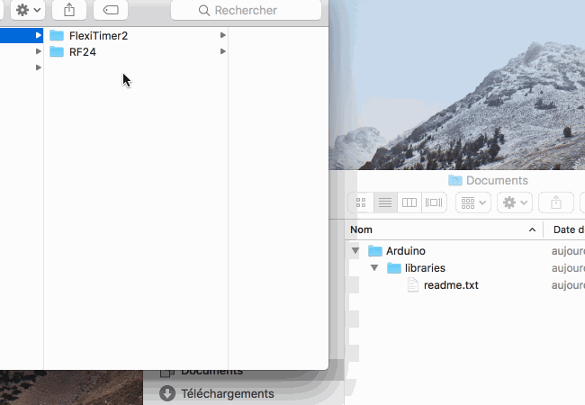

1. Downloading the code
Download this zip file
2. Preparing your computer for the following steps
If you are on a Makers' Lab computer you can go directly to part 3, everything is already installed ;)
First, download and install the Arduino IDE from the official website. This software enables us to prepare the code and upload it to the different electronic cards.
Now we need to install the libraries used by the drone and receiver source code. A library is a collection of functions that simplify writing code.
The two libraries we need are in the zip file you just downloaded.
To install them, just copy them
On MacOS: Documents/Arduino/libraries
On Windows: My Documents/Arduino/libraries 
Finaly, we have to install the driver for the small USB > Serial converter than we will use to connect the wireless receiver to your computer.
Download and install this file
3. Programming the remote
We are going to give an adress (a name if you prefer) to your drone for wireless communication. We are going to program the remote first.
Open in the Arduino IDE the file Remote.ino located in the Remote folder
Look for the line starting with
const byte rf24Address[6]
To make sure we don't give the same adress twice, please use the first four letters of your last name + the first letter of your nickname as an address.
For example: Pierre Dupont will use
const byte rf24Address[6] = { 'D', 'u', 'p', 'o', 'P' };
That's all for the code, now plug the remote using an USB A cable (the blue one).
Select the remote in the Arduino IDE using Tool > Port.
Make sure the right board type is selected (Arduino / Genuino Uno).
Now click on Upload
If you did everything correctly the message "Upload done" should appear. You can now unplug the remote.
4. Programming the receiver
We are now going to program the small wireless receiver that will be plugged into your drone. That's this small card that will receive the command from the remote. Therefore, we have to program it with the adress too!
Open the file Receiver.ino located in the Receiver folder. And modify the adress the same way you did with the remote (put the same address obviously ;)
Connect the receiver to the USB converter (be careful to not plug it backward !). Then plug everything to your computer using a micro-USB cable (the black one) as shown in the following video.

As you did for the remote, select the board in Tool > Board. And this time make sure Arduino Pro or Pro Mini is selected.
If you can't find your board, make sure you installed the CH340 driver (refer to part 2 "Preparing your computer" for the installation link).
Now click on "Upload" and wait for the upload to complete.
Don't unplug the receiver yet, we are going to test everything.
5. Testing everything !